LearnLinuxBasicNote
Linux入门
操作系统概述
首先计算机由硬件和软件组成，这是大家都知道的。硬件，就是你看到到的实体。至于软件，就是用户和计算机硬件之间的接口和桥梁。我们这次的主题：操作系统，就是软件！他是用户和计算机硬件之间的桥梁，调度和管理计算机硬件进行工作。
当代计算机不能失去计算机，就像西方不能失去耶路撒冷一样（）
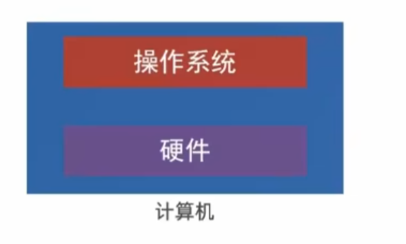
操作系统可以：调度CPU和内存进行工作，使用硬盘来进行数据存储，来使用网卡进行网络通讯，调用音响发出声音，调用打印机打印东西等等。
这是一个操作系统调用网卡的过程：
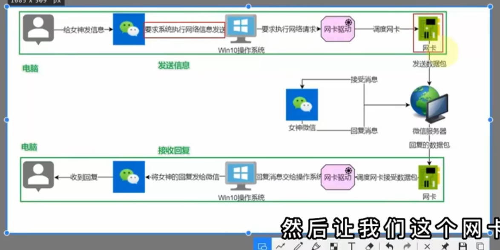
常见的操作系统有：Windows 11 ， Linux， macOS（PC操作系统）和android, IOS Harmony OS等等是移动端操作系统了。
Linux概述
1991年，Linux从一个佬那里诞生，并且逐渐被世界所接受。
Linux由Linux系统内核和系统级应用程序组成。
内核提供系统最核心的功能：比如说：调度CPU，调度缓存，调度文件系统，调度网络通信，调度IO等。
系统应用：比如说图片查看等等
Linux目录结构
Linux的目录结构是一个树形的结构，Linux不同于Windows，他只有一个根目录/，所有的文件都在它的下面
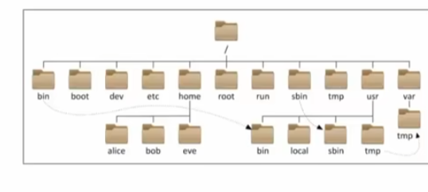
首先，我们这个是在阐述文件路径的层级关系，打开你的Windows cmd (Win + R + Enter) ，发现这个：
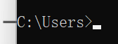
如果我们到Linux底下（不管是CentOS 还是 Ubuntu）都是 / 的
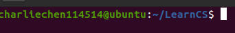
（以Ubuntu 20.04作为示例）
于是，想要在文件中找到一个目标文件，在Windows中，我们已经很熟悉了：
D:\data\work\hello.txt 在Linux下就是
/usr/local/hello.txt 注意到Linux中，/出现在开头：根目录，/出现在中间：层次关系
第一个Linux命令：ls
先停！搞清楚什么是命令很重要：他是Linux的 Terminal，下命令提示符页面我们单纯的使用’字符’来操作系统，也就是使用各种字符指令来对系统发出操作指令。
而命令，本质上还是一个程序，只是没有图形化的相关界面。其反馈又以字符串的形式返回来。
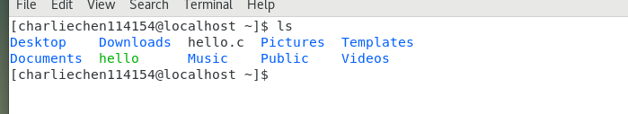
比如说在CentOS下，我们敲入字符ls 发现返回了东西。就是说明 ls 是程序，而下面的结果就是字符形式的返回
在Linux,命令具有相同的通用格式！
command [-options] [parameters] command 即是命令本身，
（选填）而 -options 就是 控制行为的一些具体的设置细节
（选填）parameter 就是命令之下的参数
举个例子：
ls -l /home ls 就是命令， -l 就是选项，表明如何执行这样的命令，/home表示参数。于是这条指令正是： 查看home文件夹下的内容，其显示方式使用列表
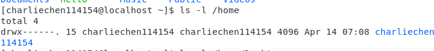
现在主要看 ls ，他的格式如下：
ls [-a -l -h] [/Linux/Path] 直接使用ls 表明直接通过平铺的方式展示这一目录下的工作内容
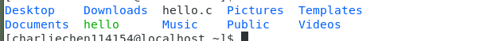
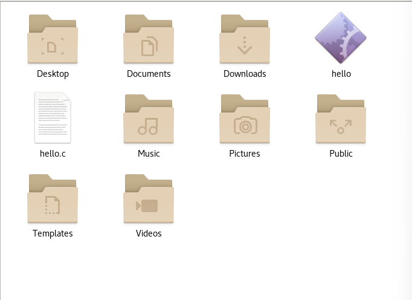
还就是桌面上那个home文件夹的内容！于是 ls 就是等同于我们来看当前文件夹下的东西。
什么是工作目录
当我们启动命令行时，默认我们的 home下的用户名为名称的目录正是工作目录：也就是我们准备执行若干操作的当下目录
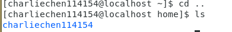
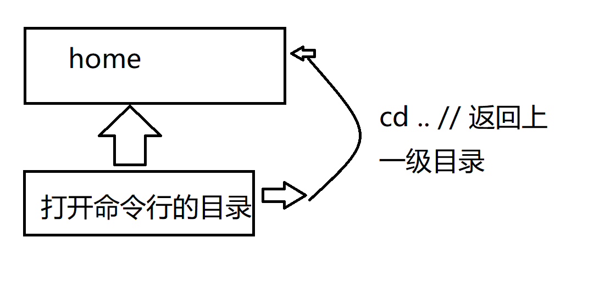
ls 参数详解
-a : all 的意思。于是。。。
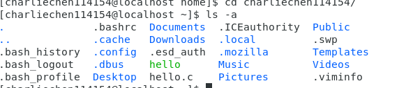
在 .Name 之类的就是Linux下的隐藏文件。总而言之，-a 就是展示所有的文件，包括那些被隐藏的文件
而在-l 下，就是以列表的方式展示我们的文件是怎样的。
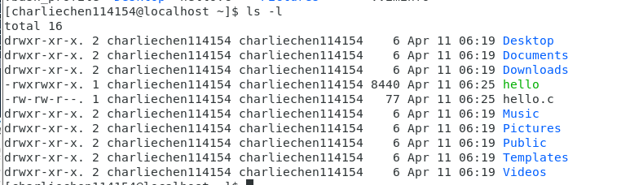
那如果我想： 既想展示所有的隐藏文件，又想用列表的方式展示，那就是可以有下面三种方式。
ls -l -a
ls -la
ls -al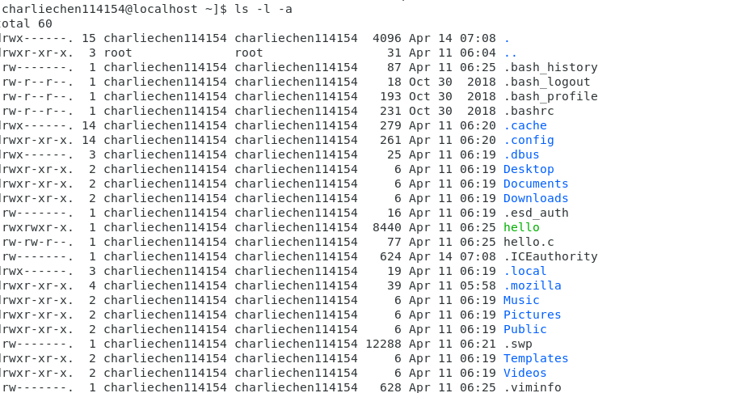

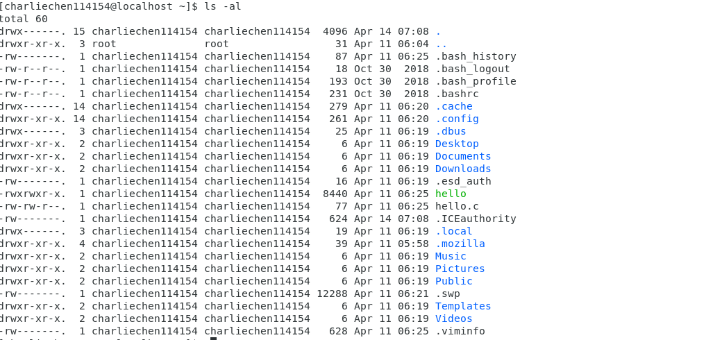
最后是 -h, 他表示我们以一种方便阅读的方式来列出文件的大小！注意必须和-l 一同使用，否则不会显示相关的效果！
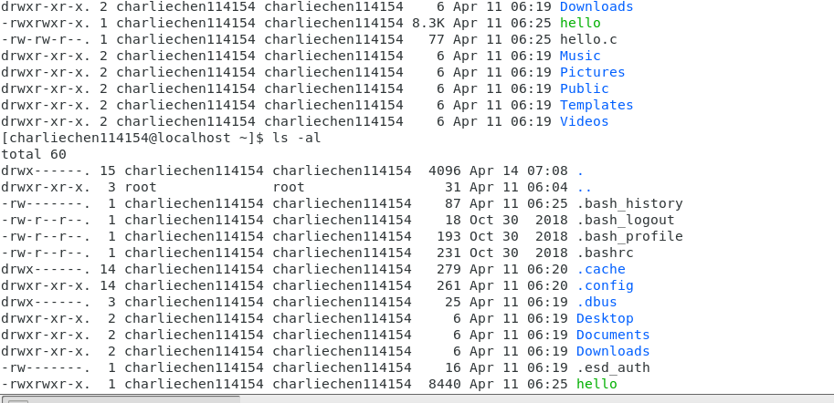
可以看到我们更容易阅读文件的大小了
cd - pwd指令
使用 cd 命令来切换工作目录（Change Directory）
cd /Linux/Path 当我们不指定路径时，直接回到home目录
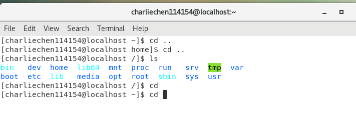
ls并不是专门打印当下目录的正确指令，至少不恰当！事实上，还是pwd才合适，他就是 print work directory 的缩写
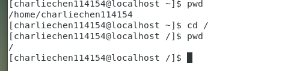
只需要输入 pwd 就可以查看当下的目录了！·
相对路径/绝对路径/特殊路径符
我们书写目录，一种是从根目录开始找： /usr/ Path，还有一种是从 当下的工作目录开始找： cd LinuxPath, 前者是就是从根目录找，称之为绝对路径，非常的绝对，代价即是很长。后者就是在当前目录去找！
下面是一些特殊的符号：
. : 当前目录，常用的就是切换到当前目录下的文件夹，比如说：
cd ./Desktop/SomeThing
.. : 返回上一级目录 退两级：cd ../..
~ : 直接回到homemkdir 命令
mkdir [-p] LinuxPath mkdir正如缩写所义：make directory。创建一个在父目录之下的子目录。而参数 -p 是可选的，他让我们可以创建一个递归的目录，适用于直接创建多层的文件夹，实际看一下就是这个意思！
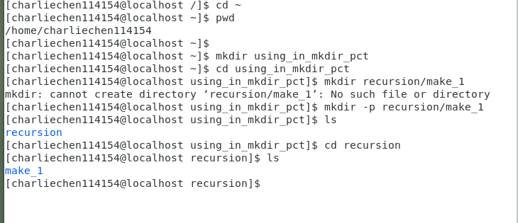
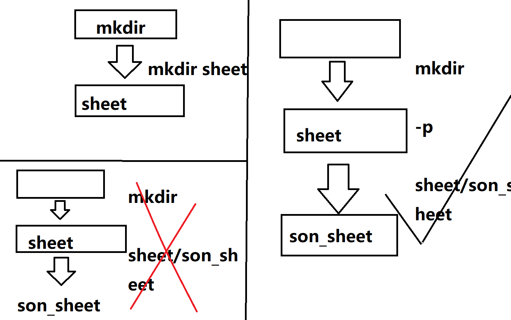
torch cat more
使用torch命令来创建文件，格式是：
touch LinuxPath/Filename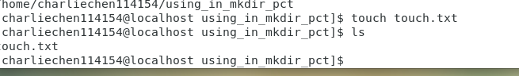
随后，我们可以先给这个文件写点东西，会使用 vim 就用 vim：
// type in shell >>>vim touch.txt
// press i to get into the insert mode
// write in file : Hello,welcome using cat to check the note off this file
// press ESC
// write :wq
// back to shell: >>> cat touch.txt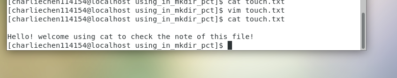
cat Linux/Path/FileName 对于more命令，那表示的是如果文件内容过长，可以使用more命令来查看文档
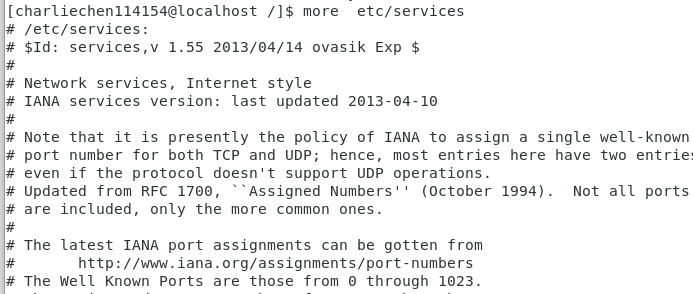
more Linux/Path/FileName 回车一行行查看，空格是一页一页看，退出是q
cp mv rm
cp是copy的缩写，就是复制文件的意思。
cp [-r] LinuxPath_beCopied LinuxPath_toThePlace -r 递归复制文件
第一个Path表明被复制的对象，第二个表示的是复制到何处。
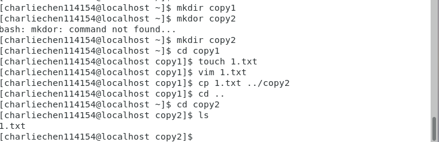
而mv:即是 move 的缩写了！
mv LinuxPath/FileName(or dirName) LinuxPathDir 当然目标不存在的话就会改名保证目标的存在

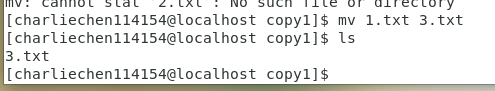
看，1.txt就被改成3.txt了
rm命令就是remove，表明删除
rm [-r -f] file1 dir1 file2 dir2 ... -r :递归删除，可以用来删除文件夹
-f: 强迫删除，不需要询问，都可以删！（force）
如此多的参数就是我们想要删除的内容，使用空格隔开

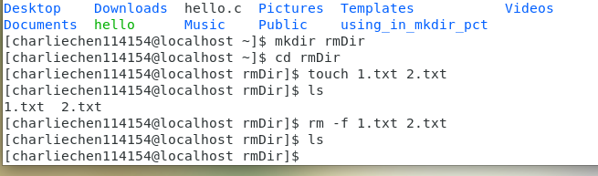
rm支持通配符*用来进行模糊搜索：如
test*表明以test开头的所有文件
*test表示以test结尾的所有文件
test\表所有包含了test这个子字符串的文件名
which和find
我们知道，Linux下的大部分命令就是程序代码，which则会告诉我们这些程序的二进制代码在哪里
which instName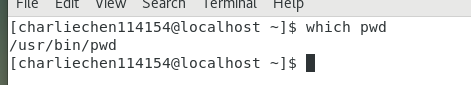
Find既是搜索指定的文件名查找
find PathStart -name "fileNameBeSearched" // 文件名查找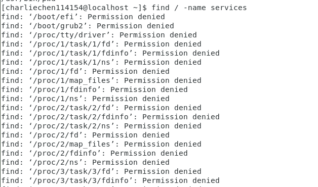
(Permisson denied 表明权限不够，回开root的开root试试)
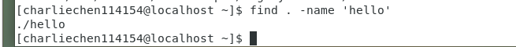
这个也支持模糊查找！具体的不再演示
另一个find即是：按照大小查找：
find pathStart -size +|- n[KMG] +表大于 - 表小于，后面带上数字和单位表大小（k(小写！！)多少KB，MB，GB）
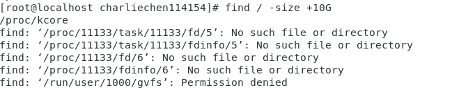
grep 与 wc
grep [-n] 关键字 文件路径 >这里有可选参数 -n 表明在结果之中显示匹配的行的行号。
关键字参数时，表明查询的关键字，如果含有特殊符号请使用“”括起来
文件路径 表文件路径，可以作为内容输入端口
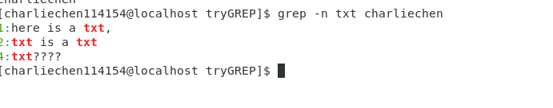
wc做字符统计
wc [-c -m -l -w] 文件路径 -c : 统计bytes数量
-m 统计字符数量
-l 统计行数
-w 统计单词数量
文件路径那自然指向的时被统计文件，可以作为输入端的端口
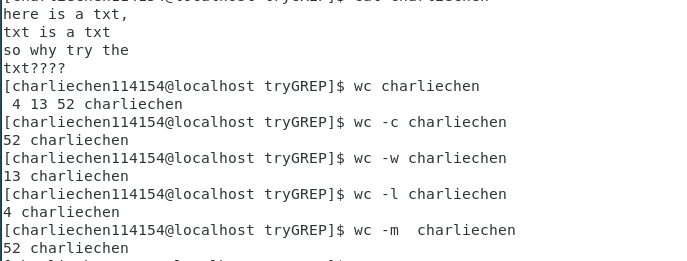
单词是用空格划分的！这是我们需要注意的。
管道符 |
我们现在尝试管道符：他正是表示的是将左边命令的结果作为右边命令的输入。
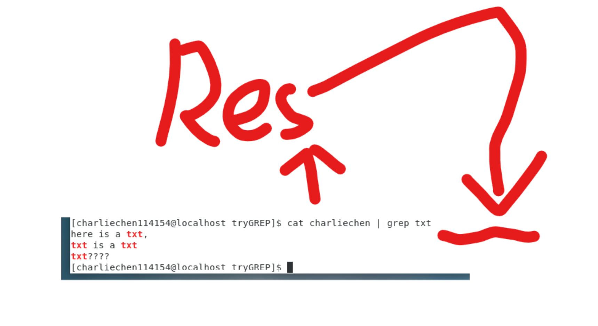
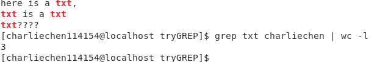
这个表明的是将检索到的内容来统计行数
echo命令输出内容
echo 输出的内容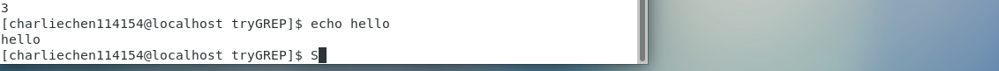
当然有特殊符号请用 “ “来括起来。
想要让他作为命令输出，如输出pwd的内容，加上`
echo `pwd` // 没什么用重定向符号 > 与>>
> :将左侧命令的结果覆盖到符号右侧的指定文件
>> : 将左侧命令的结果追加到符号右侧的指定文件
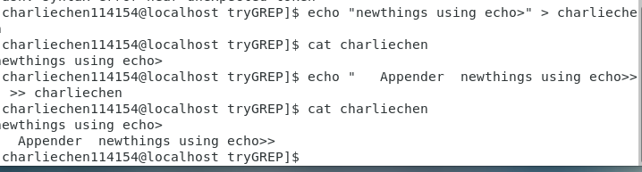
tail命令
tail [-f -num] LinuxPath 参数，Linux的路径，这表示的是被跟踪的文件路径
-f 表示持续跟踪
-num 表示查看多少行，不填就是10行
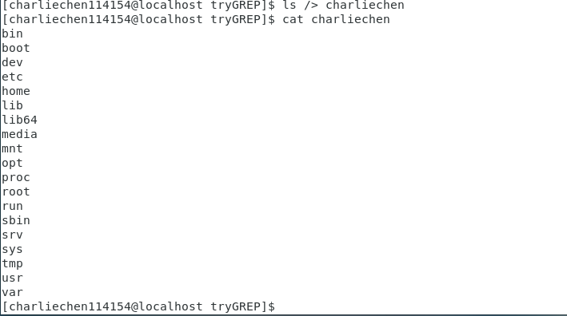
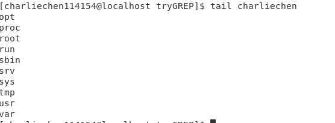
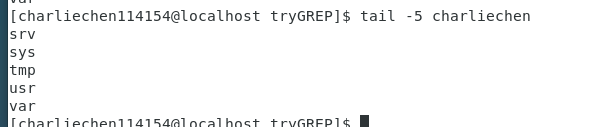
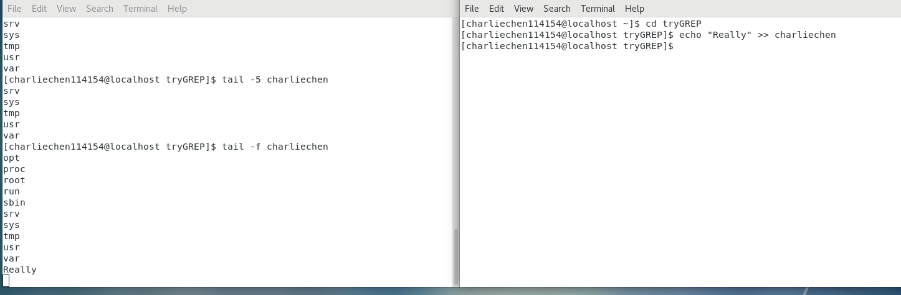
vim编辑器
这是最经典的文本编辑器
下面开始介绍：
Command mode命令模式：这里所有的输入编辑器都理解为命令，从而驱动执行不同的功能
Insert mode： 我们可以对文编编辑
Last Line mode : 用 : 作为起头，通常用在文件的保存和退出
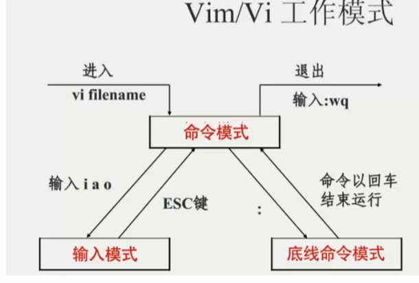
1//
vim LinuxPath 如果文件不存在就会创建一个新的文件，要不就会打开已经存在的文件。
一般打开的时候，会默认在命令模式。想要编写文件，必须先敲入 i 进入插入模式。
编辑结束后 esc 即可
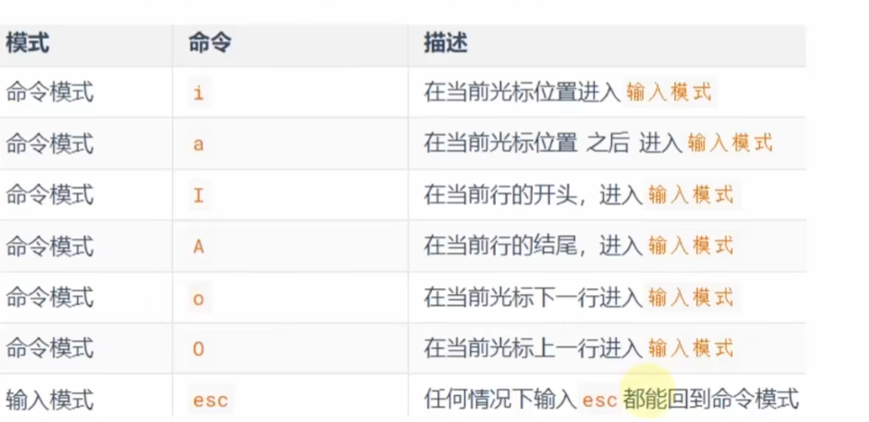
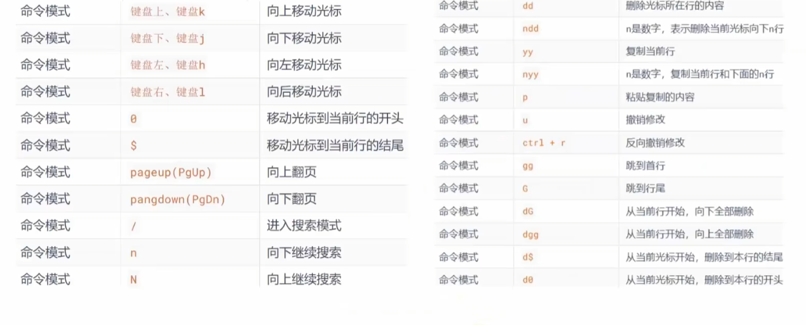
Root权限
拥有最大的权限就是root.我们几乎做任何事情都不会受到阻挠。进入的方式就是
su root
>>> encode your password in the Linux
[root@...] su 就是账户切换的系统命令，switch user
su [-] -usrName 这个符号是可选的，是用来加载环境变量的，建议带上
可以用exit指令退回到上一个用户，快捷键是 ctrl + d
sudo 用户临时使用root权限。
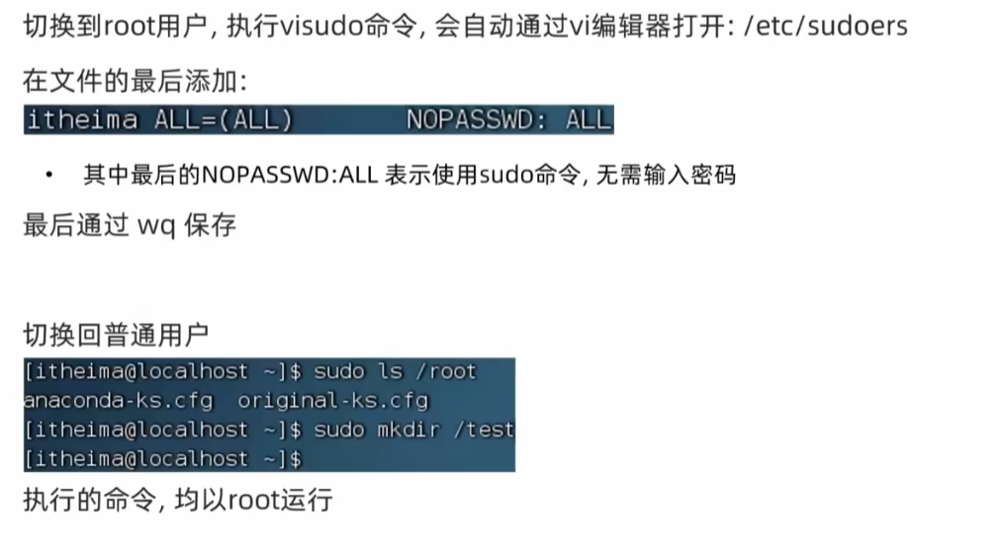
用户和用户组
我们可以配置多个用户和用户组。用户也可以加入多个用户组。在Linux下，权限管控分为针对用户的权限控制和针对用户组的权限控制。
创建与删除用户组
groupadd groupname # in rootgroupdel groupname用户的操作
1）useradd [-g -d]用户名
-g 用于指定用户所在的组，不指定-g会创建同名的组并让其进入这个组，注意如果指定的了的话必须组是存在的
-d 用于指定home在哪里，不写就是: /home/usrname
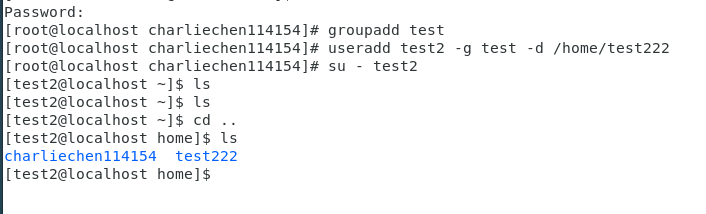
2)userdel [-r] usrname
-r就是同时删除其用户的home文件夹
3)id [usrname]
查看自己所在的用户组，带上可选参数usrname就是查看 usrname 的用户组
4）usermod -aG 将指定的用户加到指定的用户组
5）getend 查看当前系统有哪些用户。
查看权限工作
在root下，输入ls -l即可：
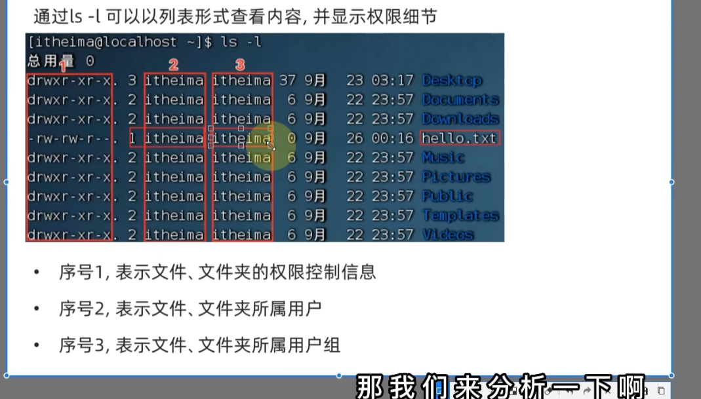
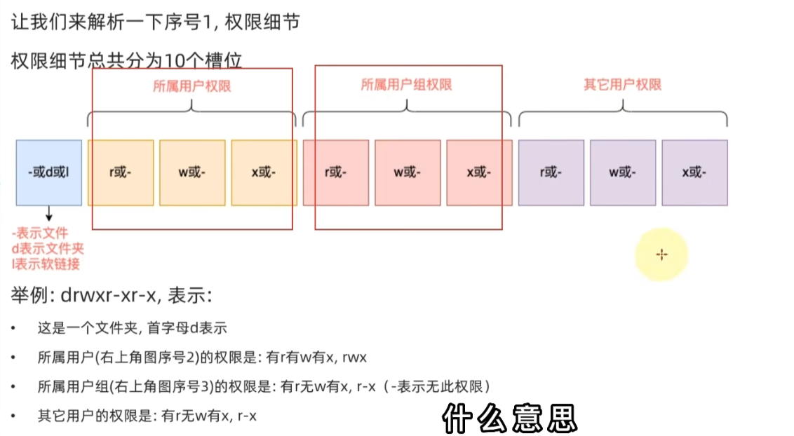
其中：r有读权限 w有写权限 x有执行权限
当然具体来说也可能会有写不同：
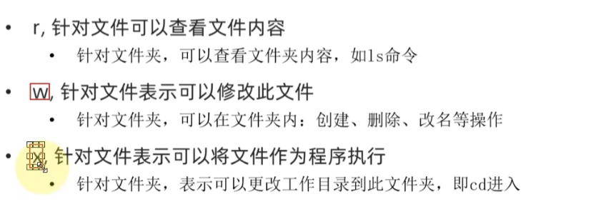
修改权限控制
chmod
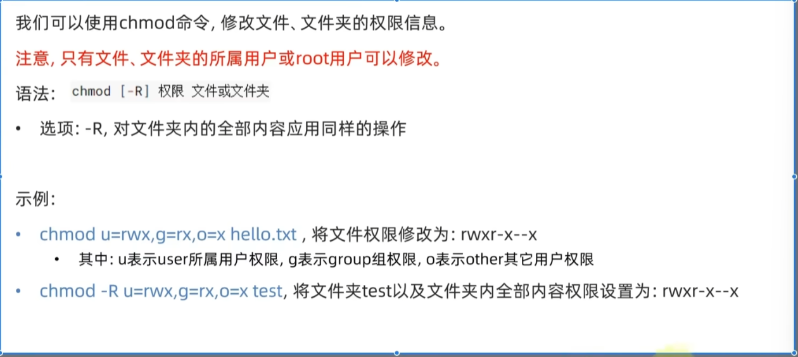
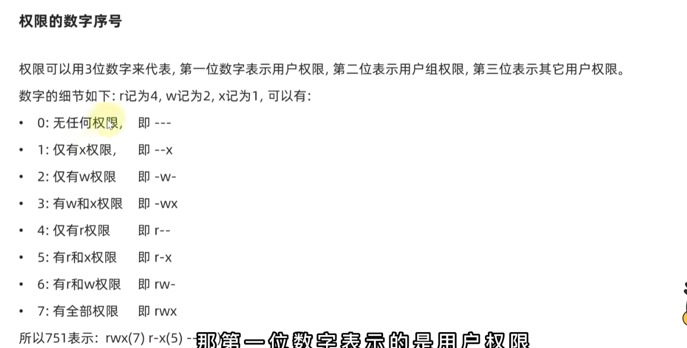
chown
一些快速操作快捷键
Ctrl + c强制停止
Ctrl + d 退出账户
history: 查看历史执行的命令， !命令前缀，自动执行从后往前的找到第一个匹配前缀的指令


这个有点像Windows下的PATH